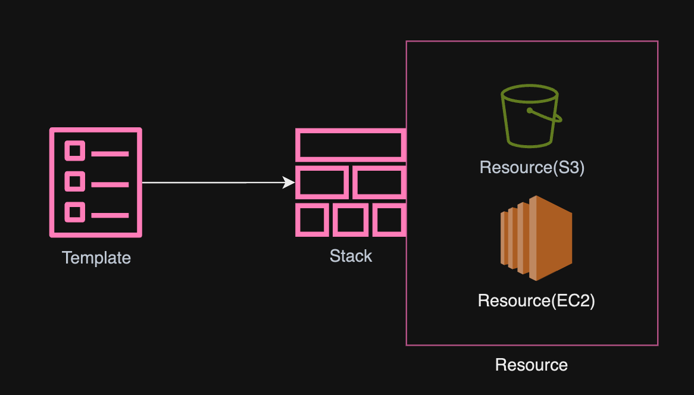
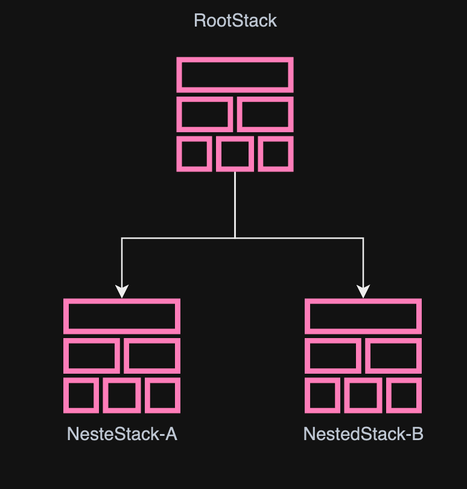
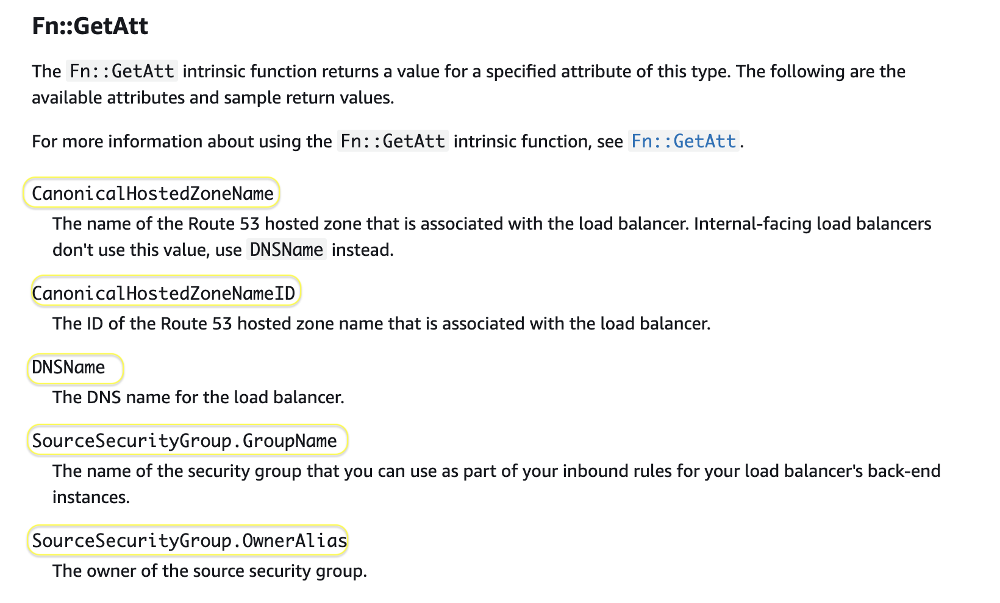

8.1. CloudFormationの基本¶
テンプレートファイルと呼ばれるAWSリソースの定義を記述したyamlやjson形式ファイルを実行することで記述されたAWSリソースを自動で管理することができるIaCの技術。
8.1.1. CloudFormationの価値¶
インフラについてコードとして記述することで以下のメリットが得られる
再現性の担保による実行の品質を担保できる
実行と削除の作業効率向上
コードとして管理することによるバージョン管理
AWSのWell-Architectedの柱である「運用上の優秀性」のポイントとして「運用をコードとして実行する」が定義されている。
8.1.2. 公式ドキュメント¶
CloudFormationの基本的な挙動については以下を確認すると良い。
実際にCloudFormationを記述するときには各リソースの定義方法を以下で確認すると良い。
8.1.3. テンプレートファイルとスタックとリソース¶
テンプレートファイルを実行することで作成されるリソースのセットをスタックと呼ぶ。 スタックによって作成されたAWSのサービスひとつひとつはリソースと呼ばれる。
テンプレートファイルを実行する際に、リソース間の依存関係などは解決される。 例えば、リソースAの値をリソースBで参照するような記述をしておけば、自動でCloudFormationはリソースAを作成してからリソースBを作成してくれる。

8.1.4. ネステッドスタック¶
CloudFormationで作成するリソースとして、CloudFormationを指定することで、親スタックと子スタックの関係性を定義することができる。親スタックのことをRootStack、子スタックのことをNestedStackと呼ぶ。

8.1.5. CloudFormationの実行と更新¶
8.1.5.1. 実行¶
CloudFormationの実行は、テンプレートファイルを使用してスタックの作成や更新を行います。テンプレートファイルのアップロード時には、Amazon S3バケットを指定するか、直接アップロードするかを選択できます。直接アップロードした場合でも、テンプレートは自動的にS3に保存される点に注意してください。
初回実行時にはスタックが作成され、2回目以降は更新処理が行われます。更新処理の際には、変更内容を反映するチェンジセットが作成されます。
8.1.5.2. チェンジセット¶
チェンジセットでは、現在のスタックの構成と新しいテンプレートファイルとの間の差分を確認できます。具体的には、リソースの変更（Modify）、削除（Remove）、追加（Add）などの差分が確認できます。しかし、詳細な変更内容の把握は難しい場合があります。
注意点として、チェンジセットは前回実行したテンプレートファイルとの差分を表示するため、実際のリソースに手動で行われた変更は反映されません。このため、新しいテンプレートファイルで上書きされます。実際のリソースとテンプレートファイルとの差分を確認するには、ドリフト検出を利用します。
8.1.5.3. ドリフト検出¶
ドリフト検出は、現在のテンプレートファイルと実際のリソース構成を比較し、差分を確認する機能です。ドリフト検出により、リソースのプロパティや設定がテンプレートと一致しているかどうかを確認できます。ただし、ドリフト検出がサポートされているリソースに対してのみ有効である点に注意が必要です。
詳細については、公式ドキュメントで確認。
8.1.6. 組み込み関数と疑似パラメータ¶
8.1.6.1. 組み込み関数¶
AWSが準備している関数であり、実行されるまでわからない値などを代入する際に利用する。 よく利用するものを以下に整理するが、一覧は公式ドキュメント参照
組み込み関数名 |
説明 |
利用例 |
|---|---|---|
Ref |
指定したパラメータやリソースの物理名を参照することができる。リソースの物理名は名前だったり、ARNだったりする点に注意 |
!Ref logicalName |
Fn::GetAtt |
論理名で指定したAWSリソースの属性を参照することができる。どのような属性が定義されているかは参照先のAWSのリソースに依存 |
!GetAtt logicalNameOfResource.attributeName |
Fn::Sub |
入力文字列の変数を、指定した値に置き換える |
!Sub 'arn:aws:ec2:${AWS::Region}:${AWS::AccountId}:vpc/${vpc}' |
Fn::FindInMap |
Mappingセクションと合わせて利用して、Mappingセクションで指定された値を参照することができる。 |
!FindInMap [ MapName, TopLevelKey, SecondLevelKey ] |
Fn::ImportValue |
クロススタック参照を利用して、別スタックの出力を参照する場合に利用する |
!ImportValue sharedValueToImport |
条件関数 |
Fn::If、Fn::Equals、Fn::Not などの組み込み関数を使用して、条件付きでスタックリソースを作成 |
ConditionとFn::If、Fn::Equals、Fn::Notの組み合わせ |
8.1.6.2. Ref詳細¶
指定したパラメータやリソース、組み込み関数に応じた値を返却する
パラメータの論理名を指定すると、それはパラメータの値を返します。
リソースの論理名を指定すると、それはそのリソースを参照するために通常使用できる値を返します (物理 ID)。
組み込み関数を指定すると、その関数の出力を返します。
リソース名を指定した場合、参照されるものは物理IDであり、リソースの種別によってARNや名前になるため、公式ドキュメントのリソースリファレンスを確認する。
以下の例ではEC2InstacneのインスタンスIDがRefで返却される。
MyEIP:
Type: "AWS::EC2::EIP"
Properties:
InstanceId: !Ref MyEC2Instance
Refを利用すると、CloudFormation側で自動で作成順序を制御してくれる。 参照されるリソースを作成してから参照する側のリソースを作成してくれる。
8.1.6.3. GetAtt詳細¶
テンプレートのリソースから属性の値を返却する。
GetAttを利用した際に参照できる属性の値についてはリソースごとに異なるため、公式ドキュメントのリソースリファレンスを確認する。
例えば、LoadBalancerの公式ドキュメントを確認すると、5つの属性が定義されている。 
上記を利用したテンプレートの例は以下。
AWSTemplateFormatVersion: 2010-09-09
Resources:
myELB:
Type: AWS::ElasticLoadBalancing::LoadBalancer
Properties:
AvailabilityZones:
- eu-west-1a
Listeners:
- LoadBalancerPort: '80'
InstancePort: '80'
Protocol: HTTP
myELBIngressGroup:
Type: AWS::EC2::SecurityGroup
Properties:
GroupDescription: ELB ingress group
SecurityGroupIngress:
- IpProtocol: tcp
FromPort: 80
ToPort: 80
SourceSecurityGroupOwnerId: !GetAtt myELB.SourceSecurityGroup.OwnerAlias
SourceSecurityGroupName: !GetAtt myELB.SourceSecurityGroup.GroupName
GetAttを利用すると、CloudFormation側で自動で作成順序を制御してくれる。 参照されるリソースを作成してから参照する側のリソースを作成してくれる。
8.1.6.4. Sub詳細¶
対象のStringに対して、パラメータの埋め込みをしてくれる。
記述方法としては以下のように、指定したStringに対して、埋め込むパラメータを定義する。 定義するパラメータには疑似パラメータやRef、GetAttも利用可能
Name: !Sub
- 'www.${Domain}'
- Domain: !Ref RootDomainName
省略形を利用した記述だと以下になり、疑似パラメータとvpcに対してのRefをパラメータとして埋め込む
!Sub 'arn:aws:ec2:${AWS::Region}:${AWS::AccountId}:vpc/${vpc}'
長い文字列の場合リテラルブロックを使用することができる
!Sub |
arn:aws:ec2:${AWS::Region}:${AWS::AccountId}:vpc/${vpc}
Subは単純に文字列操作として利用されるため、!Refや!GetAttを利用しないで、!SubだけでARNを組み立てるとCloudFormationで自動で作成順序を制御してくれない点に注意。 例えば以下のIAM Roleを!Subだけで組み立てると、作成順序は制御されない。
以下の例では、IAMを作成して、BucketPolicyでその値を!Subで参照しているため、作成順序は担保されない。 BucketPolicy作成時に、ROleがないためエラーになる可能性がある。
Resources:
MyRole:
Type: AWS::IAM::Role
Properties:
RoleName: role-for-my-bucket
AssumeRolePolicyDocument:
Version: '2012-10-17'
Statement:
- Effect: Allow
Principal:
Service: s3.amazonaws.com
Action: sts:AssumeRole
MyBucket:
Type: AWS::S3::Bucket
Properties:
BucketName: !Sub 'my-bucket-${AWS::Region}-${AWS::AccountId}'
LifecycleConfiguration:
BucketPolicy:
PolicyDocument:
Version: '2012-10-17'
Statement:
- Effect: Allow
Principal:
AWS: !Sub 'arn:aws:iam::${AWS::AccountId}:role/role-for-my-bucket'
Action: 's3:*'
Resource: !Sub 'arn:aws:s3:::my-bucket-${AWS::Region}-${AWS::AccountId}/*'
8.1.6.5. FindInMap詳細¶
組み込み関数 Fn::FindInMap は、CloudFormationのテンプレートでマッピングを使用して、キーと値のペアを検索するための関数です。
構文としては以下
!FindInMap [ マップ名, トップレベルキー, セカンドレベルキー ]
マップ名: Mappingsセクションで定義されたマップの名前
トップレベルキー: マップの最初のキー
セカンドレベルキー: トップレベルキーの下にある具体的なキー
まずは、Mappingセクションでマップとキーを設定する
Mappings:
RegionMap: # マップ名
us-east-1: # トップレベルキー
AMI: ami-0abcdef1234567890 # セカンドレベルキー: Value
us-west-1: # トップレベルキー
AMI: ami-1abcdef1234567890 # セカンドレベルキー: Value
eu-west-1: # トップレベルキー
AMI: ami-2abcdef1234567890 # セカンドレベルキー: Value
参照時には、構文を利用して値を取得する
Resources:
MyEC2Instance:
Type: AWS::EC2::Instance
Properties:
InstanceType: t2.micro
ImageId: !FindInMap [ RegionMap, !Ref 'AWS::Region', AMI ]
Tags:
- Key: Name
Value: MyEC2Instance
8.1.6.6. ImportValut詳細¶
ImportValueは、CloudFormationのスタック間でリソースや値を共有するために使用される関数です。あるスタックでエクスポートされた値を他のスタックでインポートして使用することができます。 スタック間でパラメータをやり取りすることをクロススタックリファレンスと呼ぶ。
構文としては以下
!ImportValue エクスポート名
具体例としては、出力側でエクスポート（Output）の定義を行う。MyVPCIdという値で、VPCのIDがエクスポートされている。注意点として、エクスポートする際のエクスポート名はアカウント内のリージョンでユニークになる必要がある。
Resources:
MyVPC:
Type: AWS::EC2::VPC
Properties:
CidrBlock: 10.0.0.0/16
Outputs:
VPCId:
Description: "VPC ID"
Value: !Ref MyVPC
Export:
Name: MyVPCId
Import側では先ほどのImportValueの構文を利用する。
Resources:
MySubnet:
Type: AWS::EC2::Subnet
Properties:
VpcId: !ImportValue MyVPCId
CidrBlock: 10.0.1.0/24
注意点として、ExportとImportをしている場合、Export側のスタックを削除しようとするとエラーが出る。先にImport側を削除して依存関係を取り除かないといけない。
8.1.6.7. 条件関数¶
条件関数については、別ページに整理しているので参照。
8.1.6.8. 疑似パラメータ¶
AWSが事前に定義したパラメータであり、アカウントIDやリージョンが準備されており、実行環境によって参照してくれる。 組み込み関数の"Sub"や"Ref"で利用することができる。
疑似パラメータ |
返却値 |
|---|---|
AWS::AccountId |
スタックが作成されているアカウントの AWS アカウント ID |
AWS::Partition |
リソースがあるパーティション。標準の AWS リージョンの場合、パーティションは aws |
AWS::Region |
リソースが作成されているリージョンを表す文字列(ap-northeast-1) |
AWS::StackId |
スタックの ID |
AWS::StackName |
スタックの名前 |
AWS::URLSuffix |
ドメインのサフィックスを返します。サフィックスは、通常 "amazonaws.com" |
AWS::NoValue |
Fn::If 組み込み関数の戻り値として指定すると、対応するリソースプロパティは作成されない |
AWS::NotificationARNs |
CloudFormation スタックが通知を送信する SNS トピックの一覧 |
例えば、作成されるリソースのタグにStackNameを付与するとリソースからStackを参照することができる
Tags:
-
Key: CreatedBy
Value: !Ref "AWS::StackName"